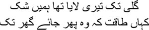

1
 y life has often been assailed by events that cannot be explained. I have given up after repeated attempts to understand or explain them. It seems to me that there can be no deeper meaning than the fact that they arrived uninvited in my life. Wandering aimlessly on the streets, if you happen to spot someone whom you do not expect to see except in a dream or in a picture, if you actually come face to face with them for a moment, what will you conclude? Will you not feel as though a door has been opened intriguingly for you?
y life has often been assailed by events that cannot be explained. I have given up after repeated attempts to understand or explain them. It seems to me that there can be no deeper meaning than the fact that they arrived uninvited in my life. Wandering aimlessly on the streets, if you happen to spot someone whom you do not expect to see except in a dream or in a picture, if you actually come face to face with them for a moment, what will you conclude? Will you not feel as though a door has been opened intriguingly for you?
Just such a wondrous door had opened for me on my last visit to Lucknow. I’m an ordinary pen-pushing labourer at a newspaper, who was in Lucknow to research a piece on the courtesans, the tawaifs, of the city. The first person I met there was Parveen Talhar, a senior government officer. She made the history of Lucknow come alive, as though it were taking place before her eyes. You will no longer find the tawaifs you read about in Shair’s old book about Lucknow or in the novel Umrao Jaan, she told me. Indeed I didn’t. So I noted down in my diary all the stories that different people told me, which were no less colourful. I for one cannot consider stories that have been passed down through generations in a lesser light than history.
Winding through the tales told by the people I had met, I ended up in old Lucknow, at the house of Farid mian in dusty Wazirganj. Despite the strong sun, it was so wrapped in shadows that you could almost call it a forgotten neighbourhood. From a distance I saw the house, the enormous mahal, named Adabistan, home of the Urdu writer Naiyer Masud. I really wanted to meet this writer who had been hounded by destiny, but how was I to pour out my rapture over his stories without knowing Urdu? I could have told him in Hindi or English, but would it be possible to fathom the mystery of Naiyer Masud’s dialogue unless I spoke to him in Urdu? All this was my imagination. No writer matches the image his writing suggests.
Farid mian sat back on his ankles with folded knees, as though he were reading the namaz. He stayed in the same pose through our entire conversation. After telling me several stories about tawaifs, he asked, ‘Do you write stories?’
— Sort of.
— So did I, once.
— Don’t you write anymore?
— No.
— Why not?
— Writing these stories, these qissas, makes you very lonely, janab. Life becomes hell for those whom Allah commands to write stories.
— But why?
— You live only with shadow people.
— So you have given up writing?
— Yes, janab. My life was turning into Karbala. You know Karbala, don’t you?
— The story of Muharram …
— Yes. But what is Karbala? Is it just about Muharram? Karbala is what happens when this life becomes an expanse of death. That is the destiny of the writer of stories, janab.
— Why?
— You’re always surrounded by shadow people, they talk to you, they drive you to madness. Hasn’t it ever happened to you?
— It has.
— Hasn’t your wife asked, why did you write this story?
— She has.
— My wife has asked me too, more than once. What do I tell her? She’ll laugh at whatever I say, she’ll tell me, you’ve gone mad, aap paagal ho gaye hain, mian.
— And so you gave up writing stories?
— All I could offer you was a cup of tea, janab. I cannot afford a meal, a dawat, for you. That’s all a writer of stories is capable of.
He sat in silence for a long time. I drenched myself in the sounds of the pigeons wafting in from the inner courtyard. Suddenly his voice percolated through the greyness of the pigeons’ cries. ‘There’s a story that’s troubling me greatly, janab.’
— What story?
Without answering, he rose to his feet slowly, and then said, ‘Can you wait for a few minutes?’
— Of course.
— Then let me show you the story.
— Did you write it?
— No. Farid mian smiled. —Wait a bit. This too is an amazing story, janab.
He sauntered off into the inner chambers. There was a mermaid above the door leading inside. Suddenly someone ran into the room. A dark, hirsute creature, who said, kneeling by my side, ‘Don’t you know mian went mad once?’
— I do.
— Well then?
— I’m here to talk to him.
— For what?
— Who are you?
— I am his servant, huzoor, his naukar. Mian will go mad again.
— Why?
— He will start talking to himself again.
— Why?
— Whenever anyone talks about stories …
When he heard the sound of approaching footsteps, the dark man ran away, saying, ‘Go away now, huzoor.’ My eyes began to roam over the mermaid’s body again. A little later Farid mian parted the curtain and entered. It seemed to me that he was bathed in a glow of satisfaction. Just a short while earlier he had appeared rather restless. He was clutching to his chest a bundle wrapped in blue velvet. He resumed his position as though he was reading the namaz, putting the bundle down on the floor as though it were a newborn baby. Then he looked at me and smiled.
— What I will show you now will make you think you’re dreaming.
What dream would Farid mian show me? I have dreamt my way through fifty years of my life. And I also know that this life of ours, describing which as real life makes most people happy, is itself someone else’s dream. I feel that I am but a picture, which became visible for only a moment before disappearing again. Someone had once dreamt of a butterfly. When he awoke, he wondered whether it was actually the butterfly that had dreamt of him.
Unwrapping the velvet cover brought an ancient manuscript to life under the light. Parts of it were termite-eaten. As I looked at it, I was reminded of a poem:
But I came from the other side of the river
If you don’t believe me ask
The unpublished novel. Ask the silverfish
That have picked at its flesh
Ask the brown cockroach eggs, ask the
Rivers cut into the body of the manuscript
By termite—all those rivers that die
Even before they can reach the sea.
Who wrote this poem? I couldn’t for the life of me remember. It must have been someone not famous enough to be memorable. Maybe it was a poet who only etched our wounds in poetry before disappearing effortlessly one day.
Farid mian picked up the manuscript as though he were caressing a baby. Offering it to me, he said, ‘Take a look.’
I took the manuscript from him the way people accept flowers from the priest for their prayers. There was a rustling sound. Were the pages crumbling even at this slightest of touches? Putting the manuscript down on the sheet, I turned its pages. It was in Urdu, a language I didn’t know. I stopped after a few pages, entranced by the beauty of the script. All I knew was that I was now holding several lost moments in time. Eventually I asked Farid mian, ‘Whose manuscript is this?’
— Saadat Hasan Manto’s. Have you heard of him?
I leaned over the manuscript, hearing my own trembling voice, ‘Saadat Hasan Manto.’
— Stories used to seek him out.
— How did you get this?
— My father gave it to me shortly before his death. He did not tell me how he got it.
— What has Manto written?
— A dastan. What you people call a novel. But you know what, a dastan is not exactly a novel. In a dastan the story never ends, whereas a novel has a beginning and an end.
— But Manto never wrote novels.
— Just this one.
— Why wasn’t it published, then?
— No one believes it, you see. I have told many people. Some of them have compared scripts to say, this isn’t exactly Manto sahib’s handwriting. But the novel matches his life perfectly. Will you see if it can be published?
— Me?
— You work for a newspaper, after all. Why don’t you try? Must Manto sahib’s work be destroyed this way by termite?
I ran my fingers over the manuscript. Was this really Saadat Hasan Manto’s unpublished manuscript before me? I couldn’t believe it. But I couldn’t take my hand away either. This was the writer who had asked these words to be engraved on his tombstone—who is the greater storyteller: God or Manto?
— Have you read it?
— Of course. I’ve lost count how many times.
— What has Manto sahib written?
— He’s written about Mirza Ghalib. Manto sahib used to dream of writing a novel about Mirza. They had made a film about Ghalib in Bombay. Manto sahib had written the script. Did you know this?
— No.
— Manto sahib was a film scriptwriter in Bombay at the time. The film he wrote about Ghalib was a hit. But sadly, he had gone away to Pakistan by the time it was made. Suraiya Begum acted as Mirza Ghalib’s lover. The film even won a national award. It was the first Hindi film to win a national award, you know. Manto sahib could not forget Mirza all his life. Mirza’s ghazals used to drive him mad, Mirza’s life too. There were many similarities between them. Mirza’s ghazals used to be on Manto’s lips all the time.
— So he wrote this novel in Pakistan?
— Exactly. The dastan of Manto sahib’s dreams. Take it, see if you can have it published.
— Doesn’t anyone want to publish it in Urdu?
— They refuse to believe it’s his. How long can I bear this burden? My days are numbered. It will be utterly lost after I die.
Farid mian clutched my hands.
— Relieve me of this dastan. Everyone calls me mad now. They say stories have consumed me.
Manto’s unpublished novel about Mirza Ghalib—none of us knew whether it was real or a fake—arrived with me in Calcutta. I didn’t know Urdu, so I only glanced at the manuscript from time to time. Had it really been written by Manto, or by someone else? Then I thought, if we’re all someone else’s dream, then a Manto from a dream could well have written a novel about a Ghalib from another dream. Did the question of authenticity even arise?
I had to consider learning Urdu simply to read the novel. My friend Ujjal arranged for a teacher. Her name was Tabassum Mirza. But within a few days of starting classes with her, I realized that I had lost both the patience and the application needed to learn a new language. One day I told Tabassum, ‘I don’t think I can ever learn Urdu.’
‘Then how will you read the novel?’ she asked.
— If you read it out and translate it, I will take it down.
— I may make mistakes in places. How will you know?
— Is anything possible without mistakes, Tabassum?
— Why?
— It was my mistake to have come to you to learn Urdu.
— What do you mean?
— You’re getting married soon. I wouldn’t have come if I’d known. After your wedding you will translate orally, I will take it down. Life is a sort of translation, Tabassum, you know that, don’t you?
Like the revolving beam of a lighthouse, Tabassum’s eyes dissected me.
On a rain-swept evening I went to Tabassum for the first time to learn Urdu. Walking down a long, dark road, I stopped at a shop to mention her father’s name and ask, which way is the house?
Whom do you want to meet?
I gave Tabassum’s father’s name.
Looking at me in surprise, the shopkeeper said, ‘But sahib is dead. Don’t you know?’
— Tabassum Mirza …
— His daughter. The shopkeeper called out loudly, ‘Show sahib the house, Anwar.’
I followed Anwar to a locked door. The silent two-storied house was soaking in the rain. Anwar began to knock on the door. Eventually the door was opened, but no one could be seen. Only a voice was heard, ‘Who is it? Kaun hai?’
— It’s me, sahib, Anwar.
— What is it?
— A visitor, sahib, mehman.
A face called out into the rain, ‘Who is it? Who is it, Anwar?’
Anwar glanced at me.
— Is Tabassum Mirza in? I answered to the invisible face.
— What do you want with her?
— I was supposed to be here this evening.
— Student?
— Yes.
— Come, come inside, why didn’t you say so earlier …
Entering, I was drenched even more. The inner courtyard was open to the skies. The person who had invited me in, whom I could not see, began to shout, ‘Open the door, Tabassum, open the door, it’s a student, a student …’
The door opened. She stood in the darkness and the shade of the rain, Tabassum, my teacher, head covered. Her voice came to me like the whistle of a train in the dead of night, ‘Come in … come in … it’s raining so hard, I thought you wouldn’t come today.’
Ignoring the fact that my shoes were sopping wet in the rain, I walked across a veranda shaped like a slice of melon to enter the room. A huge bed in a small room, a dressing table, a fridge—you couldn’t take more than a couple of steps around the room.
— You’ll have tea, won’t you?
— Please don’t bother …
— You’re soaked to the skin.
— Never mind.
— Sit down, please, have a cup of tea first.
Tabassum went into the small adjoining balcony to make the tea. I thought I had blundered my way into a maze. In my quest for tawaifs in Lucknow I had become entangled with Saadat Hasan Manto’s unpublished novel, and to prepare to read this novel I had come to be present in Tabassum Mirza’s room in a dark, central Calcutta lane. What a coincidence! I had not realized this earlier. I was going to learn Urdu from Tabassum Mirza so as to be able to read a novel about Mirza Ghalib. Lost in such thoughts, I suddenly found myself diving into a mirror of demonic proportions. I hadn’t even noticed the mirror hanging on the wall, nearly four feet in height, with an intricately carved teak frame, made of expensive Belgian glass. It had captured almost the entire room, with me inside, staring at myself, unable even to blink. The mirror seemed to draw me in. The spell was broken when Tabassum entered with the tea.
— What were you looking at? Tabassum’s lips held a smile like a crescent moon.
— This mirror, where did you get it?
— Do you know whom this mirror belonged to?
— Whom?
— To one of Wajid Ali Shah’s begums.
— How did it get here?
— My dada—paternal grandfather—got it.
I looked at the mirror again. Where was this wife of Wajid Ali Shah now? In the mirror stood Tabassum Mirza, her head covered.
Tabassum was astonished to hear of my reason for learning Urdu.
— Just to read a novel? Not for anything else?
— What else can I use it for?
— I believe you’re a writer. You could write ghazals.
— The days of the ghazal are over.
— The days of the ghazal will never be over.
Looking at Tabassum in the mirror, I listened to her. The days of the ghazal will never be over; her words seemed to float overhead like a passing cloud.
— Do you know this ghazal? Tabassum asked.

The words cascaded from Tabassum’s throat like a waterfall. Smiling at me, she said, ‘Do you know whose ghazal this is?’
— Whose?
— Mir’s. Mir Taqi Mir. See what Mir sahib is saying. My desire brought me all the way to your door, where’s the strength now to go back to my own? Will you still say the days of the ghazal are over?
— But still …
— Forget it, these things are beyond argument. Tell me about your novel.
Her head bowed, Tabassum listened to all I had to say about the manuscript I wanted to read, about its writer and its subject, and about how I had chanced upon it. The way she paid attention was akin to meditation. She was not like the majority of the people in this city, who had forgotten how to listen, which was why the very idea of waiting had vanished from their lives. After I had finished, Tabassum allowed the silence to deepen before she said slowly, ‘And why did you suddenly feel the urge to read this novel?’
— Manto is my favourite writer. I had no idea that he’d written a novel, and that too about Mirza Ghalib.
— Is Ghalib your favourite too?
— Yes. To tell you the truth, I’ve long been thinking of writing a novel about Mirza Ghalib myself.
— When will you write it?
— Let’s see. I cannot do anything very quickly. If it were just a historical novel, I could have written it quite easily. But I …
Tabassum did not speak. Nor did I. I kept gazing at her and at myself in the mirror.
After this my Urdu training began. Alif … be … pe … te … She took my hand to teach me to write, sometimes she said, ‘How nice! You’ve learnt to write so easily.’ But one day I announced that at my age I no longer had the patience or the application to learn. After a great deal of argument, Tabassum said, ‘But I know you could have done it.’
Tabassum accepted my suggestion. She would translate the novel as she read it and I would take it down. When sufficient time had passed after her wedding, I began to visit her every evening. I discovered Manto’s Ghalib afresh through her diction, and like a dutiful scribe I began to write a lost, unpublished novel in my own language.
In the course of taking down Tabassum’s translation of Manto’s novel, I realized that I would never be able to write a novel about Mirza Ghalib.
What you will read hereafter is the translation of Manto’s novel about Mirza Ghalib. Tabassum and I might return now and then.